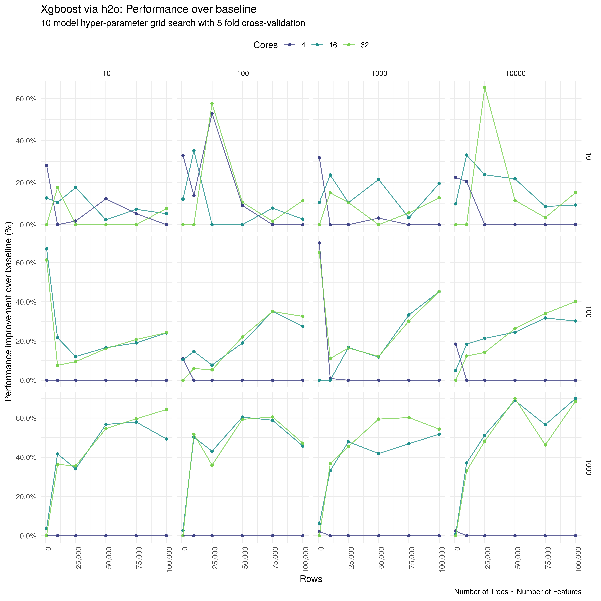

Why?
I recently built out a new workstation to give me some local compute for data science workloads. Now that I have local access to both a CPU with a large number of cores (Threadripper 1950X with 16 cores) and a moderately powerful GPU (Nvidia RTX 2070), I’m interested in knowing when it is best to use CPU vs. GPU for some of the tasks that I commonly do.
The first of these is fitting xgboost models for prediction. This makes sense as a first problem to explore as in my experience, and in the experience of the wider community, xgboost generally provides the best performance on tabular data - light GBM looks like it may be even better but the installation appears to be nightmarish - and predictive modelling is a fairly common use case. As I have recently been using the h2o package as my go-to tool, it makes sense for me to test xgboost via h2o.
I am also interested in exploring whether or not simultaneous multithreading (i.e Hyper-threading for Intel CPUs) gives any performance boost over using only physical cores for these workloads. I couldn’t find much on this online for AMD CPUs. My prior experience with Intel CPUs is that sticking to physical cores is the best option for nearly all serious compute. If this proves to be the case, disabling virtual core gives me a greater scope for overclocking!
Developing a testing function
To make this a relatively real-world test, I am going to be comparing run times on a grid of cross-validated models (10 models, with 5 folds each). A nice benefit of this is that we can also see the average performance of a configuration across a variety of hyper-parameters. In the code below I have specified the grid and used the purrr:partial function to wrap everything up into a function. I’ve also turned off early stopping, which is not something that I would do in a real use case, to allow control over the exact number of trees being trained.
## Search criteria
search_crit <- list(strategy = "RandomDiscrete",
max_models = 10, stopping_rounds = 10)
hyper_params <- list(
learn_rate = c(0.1, 0.3, 0.5),
sample_rate = c(0.6, 0.8, 1),
col_sample_rate = c(0.6, 0.8, 1),
max_depth = c(1, 5, 10),
min_rows = c(1, 2, 5),
reg_lambda = c(0, 0.001),
reg_alpha = c(0, 0.001)
)
spec_grid <- partial(h2o.grid,
algorithm = "xgboost",
nfolds = 5,
seed = 2344232,
stopping_rounds = 0,
search_criteria = search_crit,
hyper_params = hyper_params)The next step is to develop a function to fit and time a single grid. This needs to be specified by a subsample of the rows and columns, on a given number of CPU cores, and potentially with a GPU backend.
benchmark_grid <- function(df,
target,
grid = NULL,
cores = NULL,
gpu = FALSE,
rowsample = 1e3,
trees = NULL,
colsample = 1,
ram = 28) {
## Initialise the h2o cluster with the desired core number
h2o.init(min_mem_size = paste0(ram, "g"),
nthreads = cores)
h2o.no_progress()
## Sample columns (up/down sampling)
df <- df[target] %>%
bind_cols(df %>%
select(-contains(target)) %>%
{.[, sample(1:ncol(.), colsample, replace = TRUE)]})
## Specify the training data and set
h2o_train <- sample_n(df, rowsample, replace = TRUE) %>%
as.h2o
## Specify the features
features <- setdiff(colnames(df), target)
## Start the timer
tic(paste0("Trained a ",
"grid of 10 Xgboost ",
"models with ", cores, " cores",
ifelse(gpu, " using the GPU backend", ""),
" on a subsample of ",
rowsample,
" rows and ",
colsample,
" features with ",
trees,
" trees."))
if(object.size(df) > ((ram * 1000^3)/ cores)) {
message("Data size is to big to fit into RAM in this configuration")
model_fit <- FALSE
}else{
## Train the models
trained_grid <- grid(y = target,
x = features,
training_frame = h2o_train,
backend = ifelse(gpu, "gpu", "cpu"))
model_fit <- TRUE
}
time <- toc()
time$fit <- model_fit
h2o.shutdown(prompt = FALSE)
Sys.sleep(3)
return(time)
}Sourcing test data
As the base for my testing data, I am using credit data from the recipes package as an example of a real-world dataset. I went with a binary outcome as this reflects much of the modelling I have been doing day to day - usually loan defaults.
credit_data <- recipes::credit_data %>%
as_tibble
skim(credit_data) %>%
skimr::kable()Skim summary statistics
n obs: 4454
n variables: 14
Variable type: factor
| variable | missing | complete | n | n_unique | top_counts | ordered |
|---|---|---|---|---|---|---|
| Home | 6 | 4448 | 4454 | 6 | own: 2107, ren: 973, par: 783, oth: 319 | FALSE |
| Job | 2 | 4452 | 4454 | 4 | fix: 2805, fre: 1024, par: 452, oth: 171 | FALSE |
| Marital | 1 | 4453 | 4454 | 5 | mar: 3241, sin: 977, sep: 130, wid: 67 | FALSE |
| Records | 0 | 4454 | 4454 | 2 | no: 3681, yes: 773, NA: 0 | FALSE |
| Status | 0 | 4454 | 4454 | 2 | goo: 3200, bad: 1254, NA: 0 | FALSE |
Variable type: integer
| variable | missing | complete | n | mean | sd | p0 | p25 | p50 | p75 | p100 | hist |
|---|---|---|---|---|---|---|---|---|---|---|---|
| Age | 0 | 4454 | 4454 | 37.08 | 10.98 | 18 | 28 | 36 | 45 | 68 | ▅▇▇▇▅▃▂▁ |
| Amount | 0 | 4454 | 4454 | 1038.92 | 474.55 | 100 | 700 | 1000 | 1300 | 5000 | ▅▇▃▁▁▁▁▁ |
| Assets | 47 | 4407 | 4454 | 5403.98 | 11574.42 | 0 | 0 | 3000 | 6000 | 3e+05 | ▇▁▁▁▁▁▁▁ |
| Debt | 18 | 4436 | 4454 | 343.03 | 1245.99 | 0 | 0 | 0 | 0 | 30000 | ▇▁▁▁▁▁▁▁ |
| Expenses | 0 | 4454 | 4454 | 55.57 | 19.52 | 35 | 35 | 51 | 72 | 180 | ▇▃▃▁▁▁▁▁ |
| Income | 381 | 4073 | 4454 | 141.69 | 80.75 | 6 | 90 | 125 | 170 | 959 | ▇▆▁▁▁▁▁▁ |
| Price | 0 | 4454 | 4454 | 1462.78 | 628.13 | 105 | 1117.25 | 1400 | 1691.5 | 11140 | ▇▆▁▁▁▁▁▁ |
| Seniority | 0 | 4454 | 4454 | 7.99 | 8.17 | 0 | 2 | 5 | 12 | 48 | ▇▃▂▁▁▁▁▁ |
| Time | 0 | 4454 | 4454 | 46.44 | 14.66 | 6 | 36 | 48 | 60 | 72 | ▁▁▂▃▁▃▇▁ |
This dataset has been cleaned and contains a limited number of, presumably fairly predictive, variables. To make this a more realistic test I’ve introduced additional numeric and categorical noise variables, as well as adding missing data and duplicating the original features - code below.
- Add numeric and categorical noise features. Categorical features are randomly sampled and assigned 10, 50, 100, 250, 500 and 1000 levels, whilst numeric features are normally distributed with or without a log transform.
## Set up categorical variable generation
get_cat_noise_var <- function(levels = NULL, samples) {
sample(paste('level',1:levels,sep=''), samples, replace=TRUE)
}
## Generate categorical variable with differing lengths (10, 100, 1000)
cat_noise_var <- map(c(10, 50, 100, 250, 500, 1000), ~ rep(., 5)) %>%
flatten %>%
map_dfc(~get_cat_noise_var(., nrow(credit_data))) %>%
set_names(paste0("CatNoise_", 1:30)) %>%
map_dfc(factor)
## Set up numeric variable generation. Normal with random mean and standard deviation (or log normal)
get_num_noise_var <- function(noise = 0.1, samples, log_shift = FALSE) {
mean <- runif(1, -1e3, 1e3)
x <- rnorm(samples, mean, abs(mean) * noise)
if (log_shift) {
x <- log(abs(x + 1))
}
return(x)
}
## Generate numeric variables with varying amounts of noise and transforming using log
gen_numeric_var <- function(df, log_shift) {
map(c(0.1, 0.2, 0.4), ~ rep(., 5)) %>%
flatten %>%
map_dfc( ~ get_num_noise_var(., nrow(df), log_shift))
}
num_noise_var <- gen_numeric_var(credit_data, log_shift = FALSE) %>%
bind_cols(gen_numeric_var(credit_data, log_shift = TRUE)) %>%
set_names(paste0("NumNoise_", 1:30))
## Bind together and summarise
noise_var <- cat_noise_var %>%
bind_cols(num_noise_var)- Add duplicate informative features.
credit_data <- credit_data %>%
select(Status) %>%
bind_cols(credit_data %>%
select(-Status) %>%
{bind_cols(., .)} %>%
{bind_cols(., .)})- Add some missingness to the data and replace the homeowners
"other"category with 1000 random levels. Adding random noise levels to the homeowners variable means that some information is now encoded in a very noisy feature, providing more of a challenge for thexgboostmodel.
add_miss <- function(x = NULL, max_miss = NULL) {
miss_scale <- runif(1, 0, max_miss)
x <- replace(x, runif(length(x), 0, 1) <= miss_scale, NA)
}
complex_credit_data <- credit_data %>%
bind_cols(noise_var) %>%
mutate_at(.vars = vars(everything(), - Status), ~ add_miss(., 0.2)) %>%
mutate(
Home = case_when(Home %in% "other" ~ as.character(CatNoise_30),
TRUE ~ as.character(Home)) %>%
factor)
complex_credit_data## # A tibble: 4,454 x 113
## Status Seniority Home Time Age Marital Records Job Expenses Income
## <fct> <int> <fct> <int> <int> <fct> <fct> <fct> <int> <int>
## 1 good 9 rent 60 30 <NA> no free… 73 129
## 2 good 17 rent 60 58 widow no <NA> 48 131
## 3 bad 10 owner 36 46 married <NA> free… 90 200
## 4 good 0 rent 60 24 single no fixed 63 182
## 5 good 0 rent 36 26 single no <NA> 46 107
## 6 good 1 owner 60 36 married no <NA> NA 214
## 7 good 29 owner 60 44 married no fixed 75 125
## 8 good 9 pare… 12 27 <NA> no fixed 35 80
## 9 good 0 <NA> 60 32 married no free… 90 NA
## 10 bad 0 pare… 48 41 married no part… 90 80
## # … with 4,444 more rows, and 103 more variables: Assets <int>,
## # Debt <int>, Amount <int>, Price <int>, Seniority1 <int>, Home1 <fct>,
## # Time1 <int>, Age1 <int>, Marital1 <fct>, Records1 <fct>, Job1 <fct>,
## # Expenses1 <int>, Income1 <int>, Assets1 <int>, Debt1 <int>,
## # Amount1 <int>, Price1 <int>, Seniority2 <int>, Home2 <fct>,
## # Time2 <int>, Age2 <int>, Marital2 <fct>, Records2 <fct>, Job2 <fct>,
## # Expenses2 <int>, Income2 <int>, Assets2 <int>, Debt2 <int>,
## # Amount2 <int>, Price2 <int>, Seniority11 <int>, Home11 <fct>,
## # Time11 <int>, Age11 <int>, Marital11 <fct>, Records11 <fct>,
## # Job11 <fct>, Expenses11 <int>, Income11 <int>, Assets11 <int>,
## # Debt11 <int>, Amount11 <int>, Price11 <int>, CatNoise_1 <fct>,
## # CatNoise_2 <fct>, CatNoise_3 <fct>, CatNoise_4 <fct>,
## # CatNoise_5 <fct>, CatNoise_6 <fct>, CatNoise_7 <fct>,
## # CatNoise_8 <fct>, CatNoise_9 <fct>, CatNoise_10 <fct>,
## # CatNoise_11 <fct>, CatNoise_12 <fct>, CatNoise_13 <fct>,
## # CatNoise_14 <fct>, CatNoise_15 <fct>, CatNoise_16 <fct>,
## # CatNoise_17 <fct>, CatNoise_18 <fct>, CatNoise_19 <fct>,
## # CatNoise_20 <fct>, CatNoise_21 <fct>, CatNoise_22 <fct>,
## # CatNoise_23 <fct>, CatNoise_24 <fct>, CatNoise_25 <fct>,
## # CatNoise_26 <fct>, CatNoise_27 <fct>, CatNoise_28 <fct>,
## # CatNoise_29 <fct>, CatNoise_30 <fct>, NumNoise_1 <dbl>,
## # NumNoise_2 <dbl>, NumNoise_3 <dbl>, NumNoise_4 <dbl>,
## # NumNoise_5 <dbl>, NumNoise_6 <dbl>, NumNoise_7 <dbl>,
## # NumNoise_8 <dbl>, NumNoise_9 <dbl>, NumNoise_10 <dbl>,
## # NumNoise_11 <dbl>, NumNoise_12 <dbl>, NumNoise_13 <dbl>,
## # NumNoise_14 <dbl>, NumNoise_15 <dbl>, NumNoise_16 <dbl>,
## # NumNoise_17 <dbl>, NumNoise_18 <dbl>, NumNoise_19 <dbl>,
## # NumNoise_20 <dbl>, NumNoise_21 <dbl>, NumNoise_22 <dbl>,
## # NumNoise_23 <dbl>, NumNoise_24 <dbl>, NumNoise_25 <dbl>,
## # NumNoise_26 <dbl>, NumNoise_27 <dbl>, …Testing on a single iteration
To check that everything is working as expected we test on a single iteration with 31 cores, no GPU, 1000 samples, 20 features and 50 trees.
grid_test <- benchmark_grid(complex_credit_data,
"Status",
grid = spec_grid,
cores = 31,
gpu = FALSE,
rowsample = 1e4,
trees = 50,
colsample = 20)##
## H2O is not running yet, starting it now...
##
## Note: In case of errors look at the following log files:
## /tmp/RtmppdeaNe/h2o_seabbs_started_from_r.out
## /tmp/RtmppdeaNe/h2o_seabbs_started_from_r.err
##
##
## Starting H2O JVM and connecting: . Connection successful!
##
## R is connected to the H2O cluster:
## H2O cluster uptime: 1 seconds 213 milliseconds
## H2O cluster timezone: Etc/UTC
## H2O data parsing timezone: UTC
## H2O cluster version: 3.23.0.4558
## H2O cluster version age: 5 days
## H2O cluster name: H2O_started_from_R_seabbs_kha403
## H2O cluster total nodes: 1
## H2O cluster total memory: 26.83 GB
## H2O cluster total cores: 32
## H2O cluster allowed cores: 31
## H2O cluster healthy: TRUE
## H2O Connection ip: localhost
## H2O Connection port: 54321
## H2O Connection proxy: NA
## H2O Internal Security: FALSE
## H2O API Extensions: XGBoost, Algos, AutoML, Core V3, Core V4
## R Version: R version 3.5.2 (2018-12-20)
##
## Trained a grid of 10 Xgboost models with 31 cores on a subsample of 10000 rows and 20 features with 50 trees.: 61.636 sec elapsedgrid_test## $tic
## elapsed
## 6.104
##
## $toc
## elapsed
## 67.74
##
## $msg
## [1] "Trained a grid of 10 Xgboost models with 31 cores on a subsample of 10000 rows and 20 features with 50 trees."
##
## $fit
## [1] TRUEWe see that the settings above give a runtime of around a minute but using the htop tool we see that resource use is not stable over time. This may indicate that h2o is not using all the supplied cores effectively/efficiently for this data size, with these settings etc.

Load according to htop whilst running the test grid.
Enabling GPU support
Unlike using CPUs for xgboost, enabling GPU support requires some extra steps (and lots of faff). As I have a Nvidia GPU, I need to install CUDA on my local machine (see here for details); CUDA 8.0 (or higher) into the Docker container that this analysis is running in (see here for the Dockerfile - thanks to Noam Ross for the original implementation); and run the Docker container using the Nvidia Docker runtime. To check everything is working, we run the same benchmark as above but now using the GPU.
grid_test <- benchmark_grid(complex_credit_data,
"Status",
grid = spec_grid,
cores = 31,
gpu = TRUE,
rowsample = 1e4,
trees = 50,
colsample = 20)##
## H2O is not running yet, starting it now...
##
## Note: In case of errors look at the following log files:
## /tmp/RtmppdeaNe/h2o_seabbs_started_from_r.out
## /tmp/RtmppdeaNe/h2o_seabbs_started_from_r.err
##
##
## Starting H2O JVM and connecting: . Connection successful!
##
## R is connected to the H2O cluster:
## H2O cluster uptime: 1 seconds 86 milliseconds
## H2O cluster timezone: Etc/UTC
## H2O data parsing timezone: UTC
## H2O cluster version: 3.23.0.4558
## H2O cluster version age: 5 days
## H2O cluster name: H2O_started_from_R_seabbs_pon293
## H2O cluster total nodes: 1
## H2O cluster total memory: 26.83 GB
## H2O cluster total cores: 32
## H2O cluster allowed cores: 31
## H2O cluster healthy: TRUE
## H2O Connection ip: localhost
## H2O Connection port: 54321
## H2O Connection proxy: NA
## H2O Internal Security: FALSE
## H2O API Extensions: XGBoost, Algos, AutoML, Core V3, Core V4
## R Version: R version 3.5.2 (2018-12-20)
##
## Trained a grid of 10 Xgboost models with 31 cores using the GPU backend on a subsample of 10000 rows and 20 features with 50 trees.: 236.803 sec elapsedgrid_test## $tic
## elapsed
## 73.641
##
## $toc
## elapsed
## 310.444
##
## $msg
## [1] "Trained a grid of 10 Xgboost models with 31 cores using the GPU backend on a subsample of 10000 rows and 20 features with 50 trees."
##
## $fit
## [1] TRUESuccess! However, it has a much longer run time of nearly 4 minutes - not good. We again see (this time using the nvtop tool) that resource use varies over time on the GPU.
Load according to nvtop whilst running the test grid.
Iterating Across a Grid
Now that the timing function and the data are in place and everything is tested, I can run a full benchmarking grid. Using expand.grid, I’ve combined all combinations of data sizes from 1,000 to 100,000 rows, from 10 to 1000 columns, from 10 to 10,000 trees and compute availability (here 4, 16, and 32 cores + GPU). Something that I have not implemented here, but that would reduce the noise in the final results, is running each benchmark multiple times. As you will see below, this is not feasible for a weekend blog post (or even the week or two blog post that this finally became!). Note: I ended up dropping the 1000 feature combinations for the GPU as for deep trees (max_depth = 10) I was getting out of memory errors.
- Grid set-up
benchmark_input <- expand.grid(
cores = c(4, 16, 32),
rowsample = c(1e3, 1e4, 2.5e4, 5e4, 7.5e4, 1e5),
colsample = c(10, 100, 1000),
trees = c(10, 100, 1000, 10000),
gpu = c(FALSE),
rep = 1
) %>%
as_tibble() %>%
{bind_rows(.,
filter(., cores == 4, colsample < 1000) %>%
mutate(gpu = TRUE))} %>%
mutate(size = rowsample * colsample * trees) %>%
arrange(desc(size), cores)
benchmark_input## # A tibble: 264 x 7
## cores rowsample colsample trees gpu rep size
## <dbl> <dbl> <dbl> <dbl> <lgl> <dbl> <dbl>
## 1 4 100000 1000 10000 FALSE 1 1000000000000
## 2 16 100000 1000 10000 FALSE 1 1000000000000
## 3 32 100000 1000 10000 FALSE 1 1000000000000
## 4 4 75000 1000 10000 FALSE 1 750000000000
## 5 16 75000 1000 10000 FALSE 1 750000000000
## 6 32 75000 1000 10000 FALSE 1 750000000000
## 7 4 50000 1000 10000 FALSE 1 500000000000
## 8 16 50000 1000 10000 FALSE 1 500000000000
## 9 32 50000 1000 10000 FALSE 1 500000000000
## 10 4 25000 1000 10000 FALSE 1 250000000000
## # … with 254 more rows- Run benchmark - making use of
tibblenesting and, the always slightly-hacky-feeling,dplyr::rowwise. Everything here is crudely cached to avoid accidentlly overwriting results.
## Cached manually to avoid rerunning on knit.
if (!file.exists("../../static/data/workstation-benchmark/xgboost.rds")) {
benchmark_output_gpu <- benchmark_input %>%
rowwise() %>%
mutate(bench = list(as_tibble(benchmark_grid(complex_credit_data,
"Status",
grid = spec_grid,
cores = cores,
gpu = gpu,
rowsample = rowsample,
trees = trees,
colsample = colsample)))) %>%
unnest(bench) %>%
select(-msg) %>%
mutate(duration = toc - tic) %>%
filter(fit)
saveRDS(benchmark_output, "../../static/data/workstation-benchmark/xgboost.rds")
}else{
benchmark_output <- readRDS( "../../static/data/workstation-benchmark/xgboost.rds")
}
benchmark_output <- benchmark_output %>%
mutate(duration = duration / 60) %>%
arrange(gpu, cores) %>%
mutate(Compute = paste0(cores, " Threadripper 1950X CPU cores") %>%
ifelse(gpu, "Nvidia 2070 GPU", .))Benchmarking Results
After leaving everything running for a few days, the results are in. The obvious plot to begin with is to split out everything by the number of trees and features and then plot duration against sample numbers for each compute amount (i.e cores and GPU).
benchmark_output %>%
mutate(Cores = factor(cores),
GPU = gpu) %>%
ggplot(aes(rowsample, duration, col = Cores, shape = GPU, group = interaction(Cores, GPU))) +
geom_point(size = 1.2) +
geom_line(alpha = 0.8) +
facet_grid(colsample ~ trees, scales = "free_y") +
theme_minimal() +
theme(legend.position = "top", axis.text.x = element_text(angle = 90,hjust = 1)) +
scale_x_continuous(labels = scales::comma) +
scale_color_viridis_d(end = 0.9, begin = 0.1) +
labs(x = "Rows",
y = "Duration (minutes)",
caption = "Number of Trees ~ Number of Features",
title = "Xgboost via h2o: Duration",
subtitle = "10 model hyper-parameter grid search with 5 fold cross-validation")
So the first major takeaway is that using the GPU appears to be slower, and mostly much slower, than using 4 CPU cores. This is very surprising to me as everything I have seen elsewhere would indicate that the GPU should offer some substantial speed up. There are some indications however that for larger data sets, and for larger tree numbers, the GPU may be comparable to multiple CPU cores. Potentially this is because any computational benefit from using the GPU is being swamped by the overhead of constantly passing data. Therefore, as the complexity of the problem increases so does the potential benefits of using the GPU. We see something similar for increasing the CPU count, with grids with 10 features running in nearly the same time for 4, 16 and 32 cores, whilst grids with 1000 features are drastically slower on 4 CPUs vs 16. Across all tests it looks like there is little benefit from using 32 (with 16 virtual) over 16 cores.
To get a closer look at the CPU results and to try and understand the magnitude of the results, I’ve plotted the percentage improvement from a given compute amount over the longest duration for that number of rows - filtering out the GPU results as these would otherwise mask any other findings.
benchmark_output %>%
filter(!gpu) %>%
group_by(rowsample, colsample, trees) %>%
mutate(duration = (max(duration) - duration) / max(duration)) %>%
mutate(Cores = factor(cores)) %>%
ggplot(aes(rowsample, duration, duration, col = Cores)) +
geom_point(size = 1.2) +
geom_line(alpha = 0.8) +
facet_grid(colsample ~ trees, scales = "free_y") +
theme_minimal() +
theme(legend.position = "top", axis.text.x = element_text(angle=90,hjust=1)) +
scale_y_continuous(labels = scales::percent) +
scale_x_continuous(labels = scales::comma) +
scale_color_viridis_d(begin = 0.2, end = 0.8) +
labs(x = "Rows",
y = "Performance improvement over baseline (%)",
caption = "Number of Trees ~ Number of Features",
title = "Xgboost via h2o: Performance over baseline",
subtitle = "10 model hyper-parameter grid search with 5 fold cross-validation")
For 10 features, the results are very noisy with 4 cores being comparable until 10,000 trees are used. For both 100 and 1000 features, 16 (+32) cores are superior across the board with a near linear speed up as the number of samples increases. Whilst we might imagine that increasing core count from 4 to 16 should result in a near 4 times speed up (or a 75% improvment in performance), interestingly, we are only really see anywhere near this performance with over 50,000 rows, 10000 trees, and 1000 features. This is probably because h2o is parallelised on the model level (- this is conjecture based on observing htop), which means that for each fold of each model all the data has to be transferred between cores leading to a large overhead. In most of these test cases, the overhead of passing data and setting up jobs is taking up much of the potential benefit from additional cores. This leads to only a 2-3 times speed up. It’s likely that in larger data sets, with longer compute times, this would be less of an issue.
Wrap up
In this post, I have looked at the performance of xgboost via h2o on a sample data set, using a real-world test case of a cross-validated grid search. I found that using the GPU resulted in slower run times across the board, although there was some indication that performance improved for larger data and more complex models. Increasing the physical CPU count to 16 increased performance up to a maximum of 70% over 4 cores (for 100,000 features, 1000 features and 10,000 trees) but adding virtual cores led to no benefit.
A major takeaway for me is that I probably shouldn’t be relying on h2o for my grid searching in future when using smaller data sets. Something to experiment with would be parallelising across the grid, with each model using a single core. Having very much swallowed the Kool-Aid when it comes GPU compute, I was also surprised by how poor the performance was here. This is something to test further as using xgboost within h2o makes it difficult to pick apart where the problem lies. A test with a larger data set would also be helpful, although this may take awhile to run!
Any thoughts on these results would be appreciated, especially regarding the poor performance of the GPU. I am also in the market for a new ML toolbox. I’ve been looking at mlr so any recommendations would be appreciated. I’ll be following this post up with another benchmarking post using benchmarkme in the next few days - if I can resist turning off virtual cores and getting going with some more overclocking.